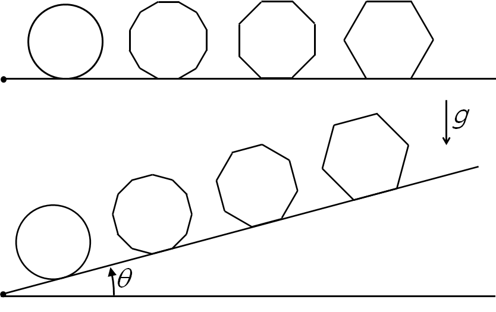

문제 1
균일한 밀도를 갖는 정육각기둥, 정팔각기둥, 정심이각기둥, 원기둥을 다음 그림과 같이 평면 위에 나란히 눕혀 놓았다. 평면의 한쪽 끝을 들어 올려 경사각 \(\theta\) 를 0에서부터 천천히 증가시키는 실험을 하였다. 이 때, 기둥과 빗면 사이의 정지마찰계수와 운동마찰계수는 각각 \(\mu_s\) 와 \(\mu_k\) 로 동일하고, 중력가속도는 \(g\) 이다.

1-1
정육각기둥이 미끄러지기 시작하는 임계각 \(\theta_c\) 를 구하시오.
1-2
정육각기둥이 미끄러지지 않고 넘어지기 시작하는 조건을 구하시오.
1-3
정팔각기둥과 정심이각기둥이 미끄러지지 않고 넘어지기 시작하는 조건을 구하고, 이를 바탕으로 정\(n\)각기둥에 대한 일반 조건을 구하시오.
1-4
원기둥이 미끄러지지 않고 굴러가기 위한 마찰계수의 조건을 유추하시오. 원기둥이 굴러가는 동안 마찰에 의한 에너지 손실이 있는가?